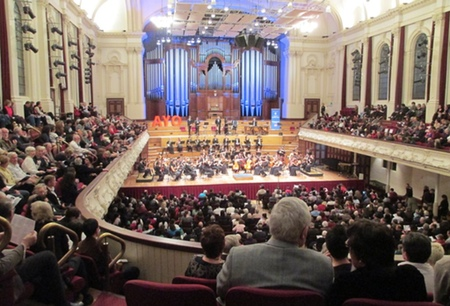
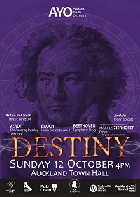

About AYO
Patron - Dame Catherine Tizard ONZ GCMG GCVO DBE QSO DStJ
President - Michael McLellan
Music Director - Antun Poljanich

AYO plays in the Auckland Town Hall July 2013.
Click here to see more photos of AYO.
AYO presents three programmes every year. For players, this involves weekly rehearsals for around two months, followed by a weekend concert tour and final performance at the Auckland Town Hall. The orchestra embarks on national and international tours approximately every three years.
First, foremost and most comprehensive
AYO is the premier regional youth orchestra in New Zealand. Founded in 1948, AYO was the first youth orchestra established in Australasia, designed to bridge the gap between school orchestras and adult professional groups. Since then, more than 2,500 young adults from diverse cultural and social backgrounds have passed through the ranks of the orchestra, having received expert training in orchestral playing. No other orchestral organisation or institution in New Zealand provides such a comprehensive programme to musicians between the ages of 15 and 28.
Evolving role
The orchestra's training role is paramount, however it has developed an extended role as a performing and touring symphony orchestra. The orchestra regularly presents concerts in centres throughout New Zealand and has made three extensive tours in Australia, New Caledonia and two to North America. In August 2011, AYO travelled to Europe, being the first ensemble from New Zealand invited to perform at the renowned Young Euro Classic Festival in Berlin, Germany. In 2013, the orchestra toured the length of the South Island with concerts in Dunedin, Gore, Te Anau, Wanaka, Westport and Nelson.
Supporting local talent
The orchestra also showcases young composers and soloists. The AYO Composer in Residence project has been running for 5 years, featuring young New Zealand composers such as Claire Cowan, Alex Taylor and Jonathan Mandeno. The orchestra has always been supportive of young local performers, accompanying Dame Kiri Te Kanawa in her youth, and more recently John Chen, Amitai Pati (Lexus Song Quest winner, 2012), Amalia Hall, Jason Bae, Eugene Lee, Simone Roggen and Thomas Hutchinson.

AYO's final concert for 2014. Click here to see more past programmes of AYO.
The AYO Concerto Competition entrenches this tradition and offers existing orchestra members the chance to compete for a concerto appearance with the orchestra. Experience with different genres allows the orchestra to engage with a broader audience base. Recent collaborations include concerts with Tim Beveridge, NZ graffiti artist Askew and backing the NZ Variety Show.
Engaging communities
Our vision is to inspire young people to excellence through their love of musical performance and to provide them with a wide range of cultural experiences; thus shaping our leaders of tomorrow. We perform more than 15 excellent but affordable and accessible concerts annually across the greater Auckland metropolitan area, nationally and abroad; attracting audiences with diverse cultural and socio-economic backgrounds and of all ages.
Here plays the future
Not only are we training future musicians to feed into our national ensembles and orchestras but we also play an important audience development role as our members are likely to be future audiences and supporters of the arts. AYO is a healthy social experience for young people and makes an important contribution to the cultural life of Auckland and New Zealand.